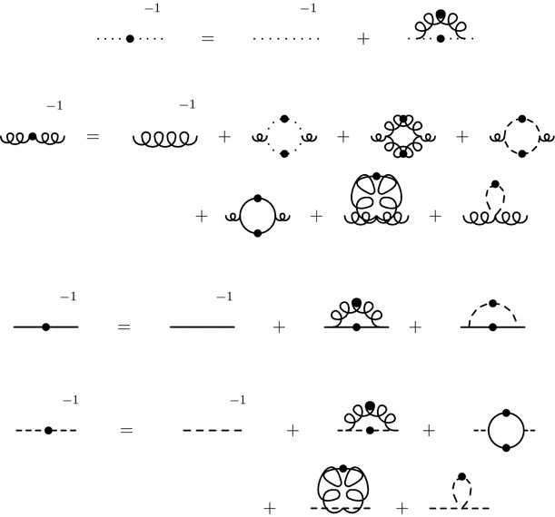
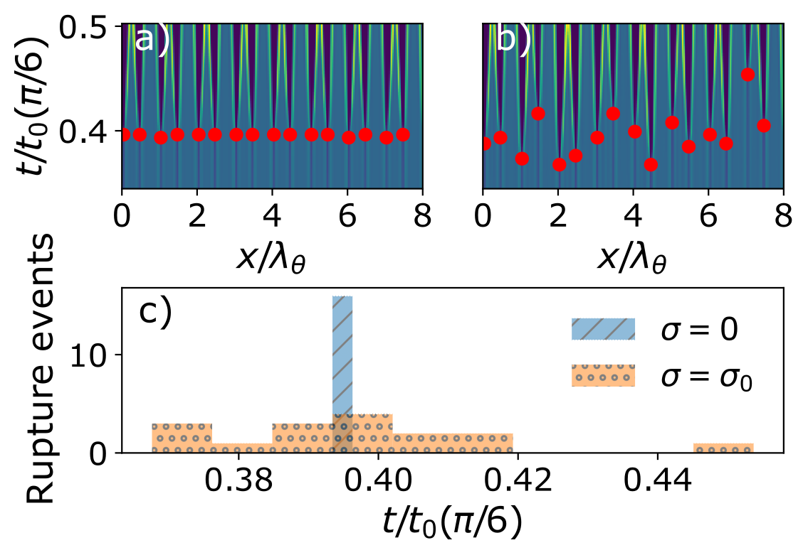
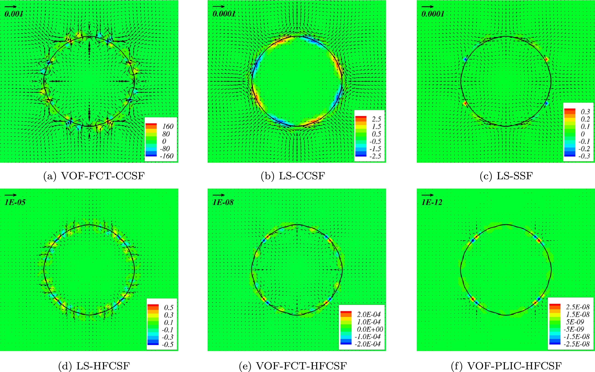

Physicist by education with focus on theoretical & computational physics (in Austria)

Maas & Zitz, EPJC, 76(113) 2016Studied thin liquid films with computational fluid dynamics for a PhD (in Germany) \[\partial_t h(\mathbf{x},t) = \nabla\cdot(M(h)\nabla p)\]

Zitz et al., PRE, 104 2021More computational fluid dynamics with free interfaces and multiple phases (in Denmark)

Abadie et al., J. Comput. Phys., 297 2015"A mathematican is a machine for turning coffee into theorems."